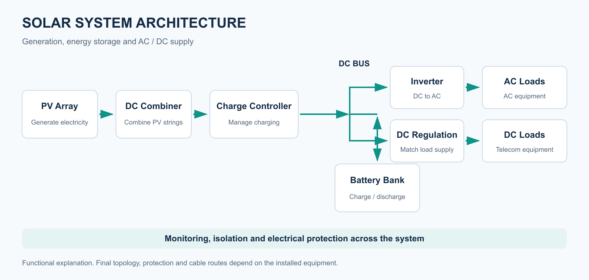
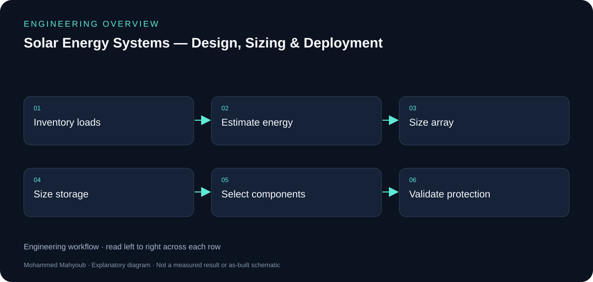

Renewable Energy · Power Systems
Solar Energy Systems — Design, Sizing & Deployment
Designed and integrated photovoltaic supply and backup systems for telecommunications and infrastructure, covering load assessment, array and battery sizing, power conversion, wiring and protection.
Implemented Project
System overview

- Author
- Mohammed Mahyoub
- Scope
- Load analysis, component sizing and selection, wiring and protection, and performance estimation.
- Use
- Solar-powered supply and backup for remote telecommunications and infrastructure sites.
Engineering rationale
Start with energy demand
Load assessment separates instantaneous power from energy consumed over time. Telecommunications equipment and infrastructure loads need an explicit operating schedule before array, storage and inverter choices can be explained.
Sizing dependencies
Array sizing depends on solar resource and losses; battery sizing depends on usable energy and the intended autonomy; inverter selection depends on load characteristics. The diagram shows these dependencies without inventing site irradiance, equipment ratings or measured yield.
Installation records
The recovered source overview shows the rooftop photovoltaic array and battery-storage installation. It documents visible system components; it does not establish battery capacity, autonomy or energy savings.
Deployment documentation
The published scope covers wiring, protection, performance estimation and remote telecommunications supply/backup. The suggested evidence checklist calls for load schedules, sizing assumptions, component data and commissioning records. It does not claim that those source documents are already publicly available.

Worked sizing example
Illustrative inputs for explaining the sizing method. These are not the installed system’s equipment ratings, site irradiance, measured demand or commissioning results.
| Example load | Running power | Hours per day | Daily energy |
|---|---|---|---|
| Communications controller | 40 W | 24 h | 960 Wh |
| Radio equipment | 25 W | 24 h | 600 Wh |
| Monitoring equipment | 15 W | 24 h | 360 Wh |
| Total | 80 W simultaneous | 24 h | 1,920 Wh/day |
Generation estimate
Assume 5 equivalent peak-sun hours per day and an overall delivery factor of 0.80 from PV generation to the defined load boundary:
PV power = 1,920 Wh/day ÷ (5 h/day × 0.80) = 480 W
This daily-energy estimate is a starting point. Seasonal generation, shading, temperature, controller limits and recovery after low-generation periods need a time-based model.
Storage estimate
For an illustrative reserve of 2 days, a usable fraction of 0.80 and a discharge delivery factor of 0.90:
Nominal storage = (1,920 Wh/day × 2 days) ÷ (0.80 × 0.90) ≈ 5,333 Wh At an illustrative 48 V: capacity ≈ 5,333 Wh ÷ 48 V ≈ 111 Ah
The generation estimate already includes its overall path losses; the storage factor is used only in the separate reserve calculation. Actual battery selection requires chemistry, temperature, discharge-rate, aging and manufacturer data. Inverter selection also needs AC demand and starting loads, which are not specified here.
Full sizing relationships and deployment context · DOE photovoltaic system design basics
Evidence and validation
Review the documented implementation against these validation topics; measured results are shown only where provided by the source.
- Load schedule and daily energy
- Solar resource/loss and autonomy assumptions
- Component compatibility and cable/protection design
- Commissioning readings and performance context
Source context
The repository includes an installation overview with rooftop PV and battery-room photographs. Equipment ratings, site loads and measured commissioning results are not provided by these photographs.
Full documentation and sources
Detailed load assessment, sizing relationships, deployment and source attribution